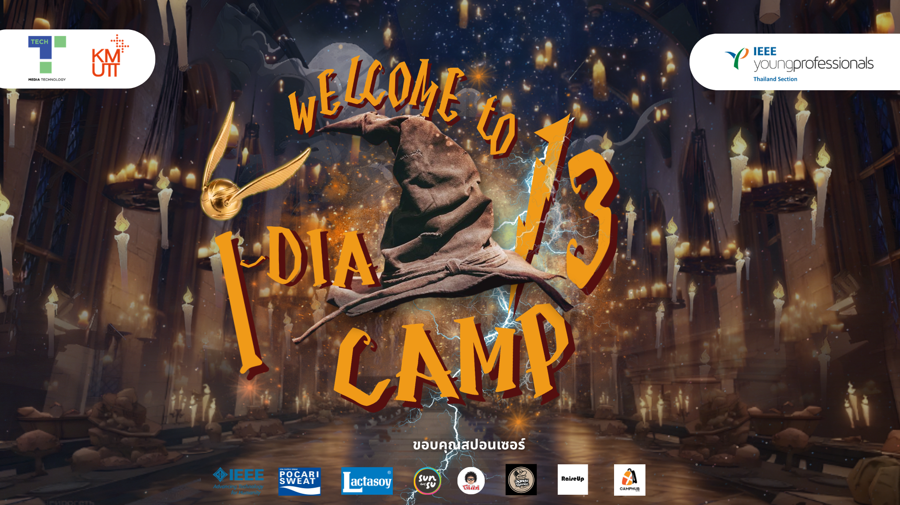

HTML · CSS · cinnamon-roll
Cinnamon Roll Wreath with Apples
หน้าเว็บสูตรอาหารที่มีส่วนผสม ขั้นตอนการทำ และภาพประกอบ
แฟ้มสะสมผลงาน
ปพิชญา ปัทมจิตร — รวมผลงานด้าน VR, การออกแบบกราฟิก และงานเว็บไซต์
ABOUT ME
ผลงาน
UNITY · PYTHON · MEDIAPIPE
ระบบควบคุมและโต้ตอบกับวัตถุในสภาพแวดล้อมเสมือนด้วยท่าทางมือ
ดูรายละเอียด ↗
02 / EVENT COVERKEY VISUAL · EVENT DESIGN
งานออกแบบภาพปกสำหรับกิจกรรม IDC13 Camp
ดูรายละเอียด ↗ 03 / POSTER DESIGN
03 / POSTER DESIGNGRAPHIC DESIGN · CONCEPT
โปสเตอร์แนวคิดร้านหมาล่าสำหรับกิจกรรมมหาวิทยาลัย
ดูรายละเอียด ↗การเขียนโปรแกรมเว็บไซต์
ผลงานจากรายวิชา 5 งาน แยกโฟลเดอร์เป็นสัดส่วน พร้อมแยกไฟล์ตกแต่งและสคริปต์ตามความเหมาะสม
HTML · CSS · cinnamon-roll
หน้าเว็บสูตรอาหารที่มีส่วนผสม ขั้นตอนการทำ และภาพประกอบ
HTML · CSS GRID · MEDIA QUERIES
A recipe website using a responsive layout and a collection of recipe images.
JAVASCRIPT · DOM · การจัดการเหตุการณ์
เว็บกระดานข้อความที่จัดโพสต์ลงในส่วนหัวข้อและคำตอบ พร้อมฟังก์ชันล้างข้อความ
แบบฟอร์ม · Register and login · LOCALSTORAGE
ตรวจสอบการสมัครสมาชิก ยืนยันรหัสผ่าน จัดเก็บข้อมูลแบบฟอร์ม และตรวจสอบการเข้าสู่ระบบ
DOM · ตัวจับเวลา · Square game
เลือกจำนวนและสีของช่องสี่เหลี่ยม แล้วลบให้ครบก่อนหมดเวลา 30 วินาที
เครื่องมือและทักษะ
สรุปเทคโนโลยีและแนวทางที่ใช้ในงานเรียนและการทดลองทำโครงงาน
ช่องทางติดต่อ
Instagram: @ppap.lepie
Instagram: @ppap.lepie